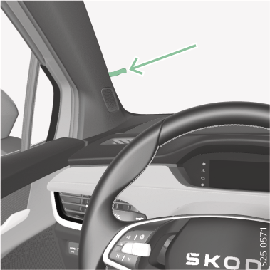

<!-- topicId: 13ae78acfe3584b25f0cac38f90f5441_3_fr_FR | type: topic -->
<h1>Vue d’ensemble</h1>
<html data-dyxml-version="2"><div lang="fr-FR"><div class="topic-content"><section data-type="topic-allgemein" data-dl-contains="block" id="ID_5d8b8d027b96dc7bac1445253121e9f6-8d1fd6b7ca6b5df2ac14452568f07d08-fr-FR"><p id="ID_886608717b96dc7bac14452566c58d74-8d1fd6b7ca6b5df2ac14452568f07d08-fr-FR"></p><div data-role="block" data-type="block" id="ID_505a25837b96dc7bac1445255c6d5a99-8d1fd6b7ca6b5df2ac14452568f07d08-fr-FR" hasIllu="true"><div data-type="illu" id="ID_1cb2ffd0dd8011ef9b3ff90ec6707df7-8d1fd6b7ca6b5df2ac14452568f07d08-fr-FR"><div data-class="vw-layout-half_column" data-dl-wrapper="figure" id="d2172113e34"><figure id="ID_3ce702e9b18d1dadac14452559c135e3-8d1fd6b7ca6b5df2ac14452568f07d08-fr-FR" data-role="" data-type="" data-position=""><div><a data-fancybox="group" media-link="" class="fancybox" data-href="../media/imgbc2db493a0c07397ac1445256b2b97d8_1_--_--_PNG_3x.png" data-options="{&#34;buttons&#34;:[&#34;fullScreen&#34;, &#34;thumbs&#34;, &#34;close&#34;],&#34;hash&#34;:false}"></img></a></div></figure></div></div></div><div></div></section></div></div></html>